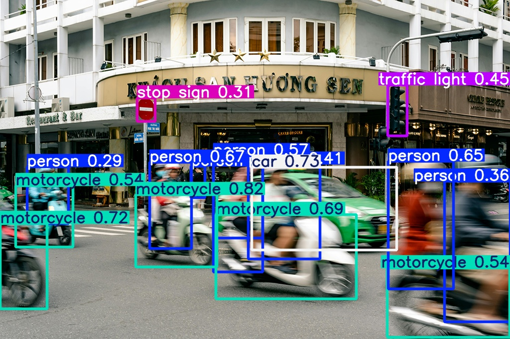
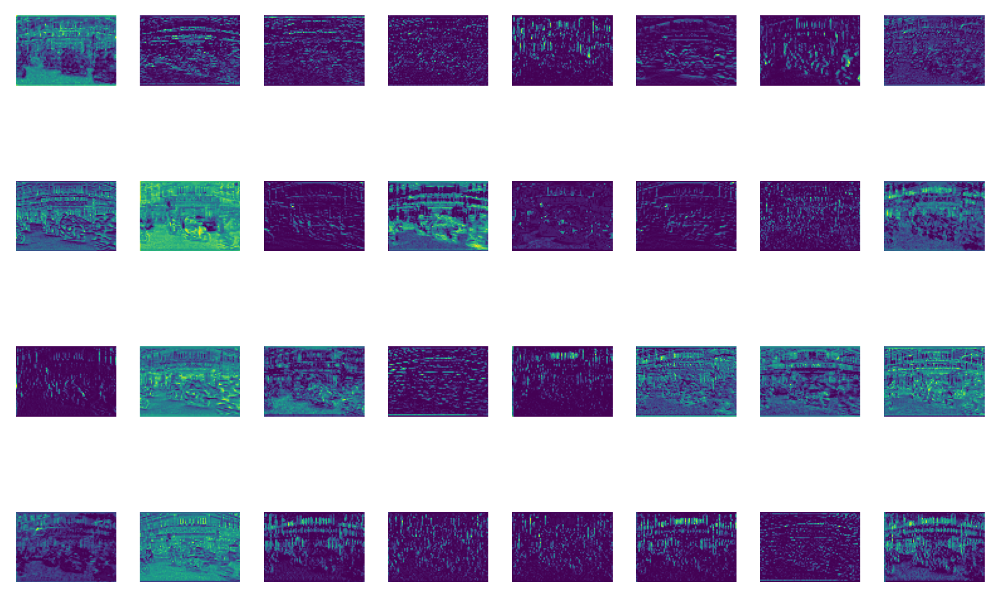
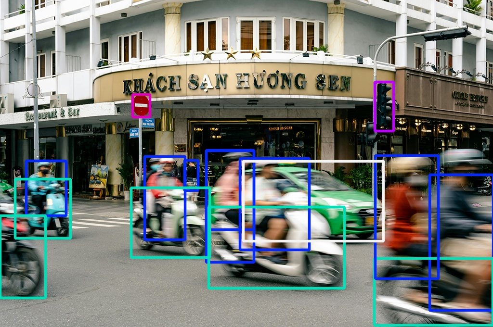

After learning about computer vision in general and how YOLO works, we can start using YOLO for our purposes. We will see, how much we can do with little code.
Project Setup
We start with the project structure from before and create a new jupyter notebook yolo_detect.ipynb
We will start with the picture pic2.jpg which is quite challenging due to motion blur.
Inference
Inference
In machine learning, inference refers to the process of using a trained model to make predictions or decisions on new, unseen data. It's the production phase where the model applies what it learned during training to analyze new inputs and generate outputs, like when a trained image recognition model identifies objects in a new photo.
Pretrained Models
Fortunately, so that we don't have to start from scratch, there are already pre-trained models from YOLO that we can use. These pre-trained models have been trained with the help of a lot of data (for detection e.g. on the COCO dataset) and are now available to us without any further effort. For example for detection:
Model
size (pixels)
mAPval 50-95
Speed CPU ONNX (ms)
Speed T4 TensorRT10 (ms)
params (M)
FLOPs (B)
YOLO11n
640
39.5
56.1 ± 0.8
1.5 ± 0.0
2.6
6.5
YOLO11s
640
47.0
90.0 ± 1.2
2.5 ± 0.0
9.4
21.5
YOLO11m
640
51.5
183.2 ± 2.0
4.7 ± 0.1
20.1
68.0
YOLO11l
640
53.4
238.6 ± 1.4
6.2 ± 0.1
25.3
86.9
YOLO11x
640
54.7
462.8 ± 6.7
11.3 ± 0.2
56.9
194.9
Available pretrained YOLO models for detection (Source: Ultralytics)
Running the Detection
Based on these pretrained models, to detect objects in an image with YOLO, only a few lines of code are required:
# Import required librarysfromultralyticsimportYOLO# Define the path to the source picturepicpath="pics/pic2.jpg"# Load a pretrained YOLO11 Model (Size: Nano)model_det=YOLO("yolo11n.pt")# Apply the model to our source pictureresults=model_det(picpath)
Speed: 2.0ms preprocess, 40.3ms inference, 0.0ms postprocess per image
But are those all of the results? Where are those objects in the image? How sure are we, that there are six persons? We need to go deeper into the results.
Understanding the results
The before seen output of the detection is just a brief overview. All the information is stored in results
# Get the first (and only) image's resultsresult=results[0]print(result)
Task: Analyze the Results
Take a look at the result and answer the following questions (don't forget to use google and the docs)
What is the original shape of the image?
How many different classes are available and what are they?
Why is keypoints, masks and obbNone? What do you think?
Now go deeper and analyze result.boxes
What are the detected classes? How do they respond to the labels (person, car,...)
How sure is YOLO about the detected objects? (hint: the right wording is confidence)
What are the differences between xywh, xywhn, xyxy and xyxyn
data is the collection of what?
How are data and shape are connected?
Multiple Images
You can also pass multiple images at once. To access the results for a specific image, you need to choose one from the results list.
So far we have everything we need to detect objects in images and work with the results.
But sometimes a picture is worth a thousand words!
Visualize the Results
In some cases, the 'simple' extraction of the results is not sufficient and a visualization is needed.

For visualizing the results there are two options available: showing and saving the picture.
Showing the Resulting Image
YOLO makes it really easy to show the resulting image. With the method .show() the result can be visualized:
result.show()
This should result in the above shown image.
Saving the Resulting Image
There are multiple ways to save the resulting image.
Saving Images
YOLO offers various visualization arguments, which can be used directly in the inference command. One of them is save=True
results=model_det(picpath,save=True)
Unless other specified, the file will be saved in a new folder 📁 runs/detect/predict/. Use the argument save_dir='your/custom/path' to specify a different folder.
When you install ultralytics the package opencv-python will be installed automatically as dependency. openCV is a powerful tool for image and video processing and can also be used for saving the image
annotated_image=result.plot()# Display using OpenCVimportcv2# Save the imagecv2.imwrite("output_detection.jpg",annotated_image)
Unless other specified, the file will be saved directly into the working directory 📁 computer_vision.
See the Magic Happen
If you are interessted in seeing, what the model is seeing and doing, you can use another visualization argument
results=model_det(picpath,visualize=True)

The resulting pictures in the folder 📁 runs/detect/predict/pic2 are a 'Intermediate Features Visualization'
This parameter saves visualizations of the intermediate feature maps or activations from the YOLO model.
These feature maps show what parts of the image the model focuses on during different stages of the neural network.
These outputs help in debugging and understanding the model's inner workings.
Inference Arguments
After we worked on the output side of the Yolo, it's now time to focus more on the input side. Besides those visualization arguments we have used before, there are numerous inference arguments, which can be handed over to the model. An overview can be found in the documentation
Task: Inference Arguments
Confidence
Run a detection with confidence threshold 0.5.
Save this image as high_conf.jpg
Now try confidence 0.25, save as low_conf.jpg
Compare both images - what differences do you notice?
What is the default value?
Classes
Limit your detection to just detect motorcycle and car
Save the results as class_limit.jpg
Adjusting the output path
Use the two inference arguments project and name to adjust the output folder to 📁 output_pics/detection_pics/.
Adjust the visual outcome
Run a detection for our pic2.jpg image and adjust:
no label should be shown
no confidence should be shown
line width of the boxes should be 3

Further Adjustments
As we have discussed before, YOLO comes in different model sizes, trading speed for accuracy.
Task: Model Comparison
For each model size determine the following characteristics by running a detection on the pic2.jpg:
Time the detection speed
Count detected objects
Compare confidence scores
Create a table with your findings:
Model
Detection Time
Objects Found
Avg Confidence
nano
small
medium
large
extra large
🎉 Congratulations
You are now able to perform object detection on images and work with the results!
Detection Fail (Source: Visualizing Object Detection Features on Springer Nature Link)